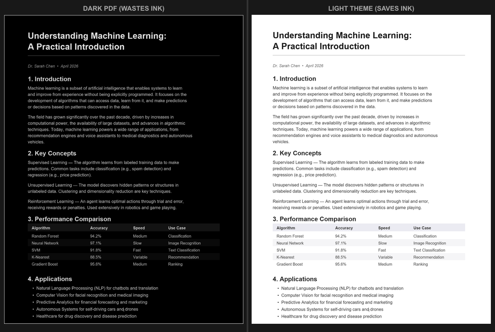

How to Invert PDF Colors: Methods That Actually Work
Quick answer: you can invert PDF colors three ways - your operating system's accessibility shortcut (instant, but flips your whole screen), your PDF reader's built-in invert setting (only that app), or the Invert PDF Colors tool, which writes a true inversion into the file so it stays inverted everywhere. For comfortable reading with images intact, a themed dark-mode conversion usually looks better than a raw invert.
"Invert PDF colors" usually means one of two goals: making a bright document readable in the dark, or flipping a dark document to light so it doesn't drain a printer cartridge. The methods differ depending on which you need, and whether you want the change to be temporary (just while you read) or permanent (saved into the file). Here is each method, what it's good for, and where it falls down.
What inverting actually does
Color inversion replaces every color with its opposite: white becomes black, black becomes white, blue becomes orange. For plain black-on-white text that produces a clean dark page. The moment the document has photos, colored charts, or logos, inversion turns them into negatives - a blue bar chart goes orange, a portrait's skin tones go alien. That's the key limitation to keep in mind before you reach for it.

Method 1: OS-level color inversion (instant)
Every operating system can invert the whole screen from an accessibility setting. Nothing to install - just toggle it:
- Windows: press Windows key + Ctrl + I to toggle inversion, or Settings > Accessibility > Color filters > Inverted.
- macOS: System Settings > Accessibility > Display > Invert colors. "Smart Invert" tries to spare images, which works better for most PDFs.
- iOS / iPadOS: Settings > Accessibility > Display & Text Size > Smart Invert (or Classic Invert). Add it to the Accessibility Shortcut for a triple-click toggle.
- Android: Settings > Accessibility > Color inversion.
It's instant and reversible, but it inverts everything on screen - desktop, browser, chat - so you end up toggling it back off, and switching repeatedly can be disorienting.
Method 2: Your PDF reader's invert setting
Some readers can invert only the document, not the whole screen. Adobe Acrobat hides this under Edit > Preferences > Accessibility > Replace Document Colors > Use High-Contrast colors. It's display-only (it isn't saved into the file), offers a few fixed presets, and distorts images. Other readers vary. This is fine for quick on-screen reading, but it doesn't travel with the file.
Method 3: Bake the inversion into the file
If you want the inverted version to stay inverted - to share it, archive it, or open it on another device - you need to write the change into the document. The Invert PDF Colors tool does exactly that, entirely in your browser (your file is never uploaded). Drop the PDF in and download a new file with the colors inverted, ready to open anywhere with no settings to toggle.
Inverting a dark PDF to light for printing
Inversion isn't only for reading - it's genuinely useful in reverse. Dark-themed slide decks and dark PDFs look great on screen but are brutal to print: a black background can soak up a startling amount of toner or ink across dozens of pages. Inverting the document back to a light background first turns those pages into ordinary black-on-white, so they print cleanly and cheaply.

Invert, or convert to dark mode?
Use a straight invert when the document is essentially plain text, or when you need a true negative (like the printing case above). Use a themed dark-mode conversion when you want a comfortable reading experience on a document that contains images, charts, or color - because it darkens the page intelligently instead of flipping every pixel.

For the full breakdown of how the two methods treat photos, charts, and colored text, see the main converter, which can apply 16+ dark themes and preserve images instead of inverting them.
Invert a PDF now: open the Invert PDF Colors tool, drop your file, and download the inverted version. Free, private, no upload. Want themed dark mode instead? Use the PDF Dark Mode Converter.
Frequently Asked Questions
Three ways: toggle your OS color inversion (instant but flips the whole screen), use a PDF reader's invert setting (affects only that app), or use the Invert PDF Colors tool to bake a true inversion into the file so it stays inverted everywhere.
Press Windows key + Ctrl + I to toggle the magnifier color inversion on and off. It inverts the entire screen, not just the PDF.
If the PDF is plain black-on-white text, inversion is fine. If it has photos, charts, or colored elements, a themed dark-mode conversion looks far better because inversion turns every color into its opposite.
Yes. Inverting dark slides or a dark-themed PDF back to a light background before printing saves a lot of toner or ink. The Invert PDF Colors tool does this and bakes it into a new file.